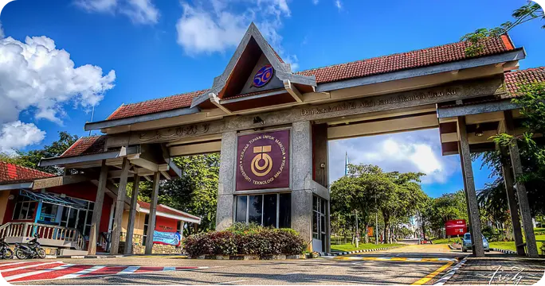
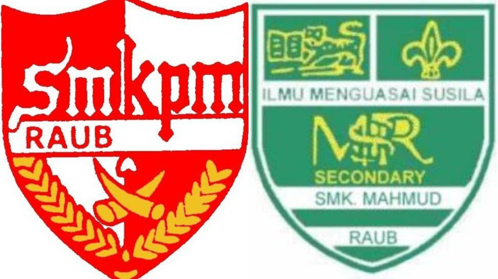
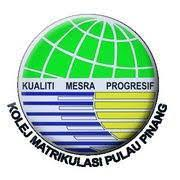
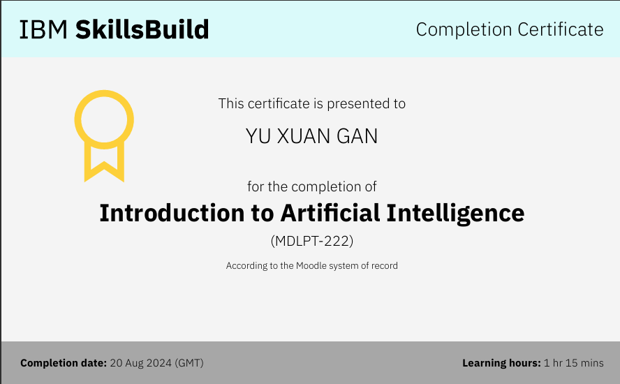
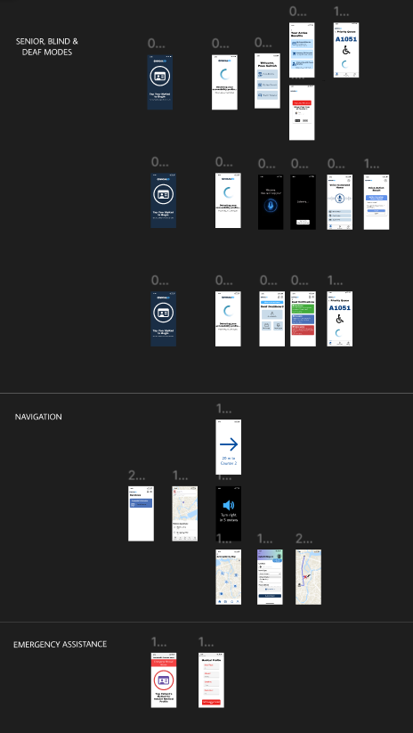

About Me

I am a Year 1 of Bachelors Degree of Computer Science (Computer Networks & Security) at UTM with a strong interest in cybersecurity and emerging technologies. I am aiming to become a cybersecurity specialist who solves real-world problems like cyber scams and identity information leakage.
By taking the course Technology and Information System in semester 1, it allowed me to understand the fundamental concepts and requirements needed in the future. This course helped me to build a strong foundation to engage in professional field since this course provided chances to involve in industry talks and visits.
By taking the course Technology and Information System in semester 1, it allowed me to understand the fundamental concepts and requirements needed in the future. This course helped me to build a strong foundation to engage in professional field since this course provided chances to involve in industry talks and visits.At the same time, I am continuously improving my leadership, communication and project management skills through each assignments and projects to ensure that on time submission and fulfill with all the requirements.
Last but not least, I would like to express my appreciation to my lecturer, Dr. Shafaatunnur who guiding us throughout the assessments during this semester.
Education
Primary School
SJK(C) Yuh Hwa
UPSR : 4A 4B

Secondary School
SMK(P) Methodist & SMK Mahmud
SPM : 11A
CEFR : B2

Pre-university Program
Penang Matriculation College
CGPA : 4.00 MUET : Band 4
University Program
University of Technology Malaysia
Position
Current
Undergraduate Student
Secondary School
- President of Chinese Language Club
- Team Leader of Prefect
- Active Member of Chess and Caron Club
Matriculation
- Active Member of Peer Assistant Leader
- Peer Assistant Leader of Physics Subject
Skills
- Critical thinking
- Leadership
- Problem-solving techniques
- Abilities to gather data
- Teamwork & communication skills
Courses
- Technology and Information System
- Discrete Structures
- Programming Technique I
- Digital Logic
Certificate


Project
- Design Thinking Project(Low-Fidelity Prototype)
- NexG Godamlah 2.0: Smart ID Hackathon 2025

